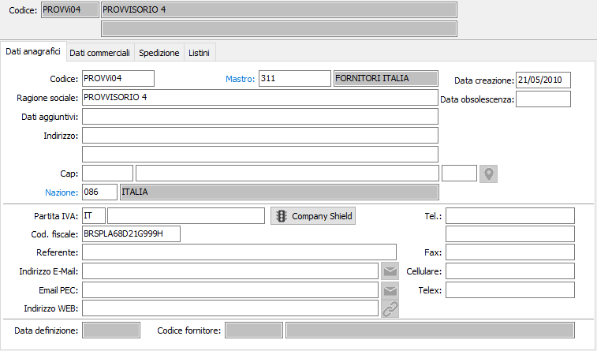
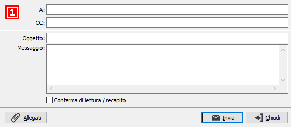

Dati anagrafici

CODICE: inserire il codice del fornitore provvisorio. Su questo campo è attiva la funzione di ricerca (F9) relativa ai fornitori provvisori.
MASTRO: codice alfanumerico di otto caratteri per inserire il codice del mastro di riferimento. Sul campo sono attive le funzioni di ricerca (F9) sulla tabella stessa.
RAGIONE SOCIALE: campo alfanumerico per inserire la ragione sociale del fornitore provvisorio.
DATI AGGIUNTIVI: campo alfanumerico per inserire il seguito della ragione sociale, nel caso in cui il campo precedente non sia in grado di contenerla completamente.
INDIRIZZO: campo alfanumerico per inserire l'indirizzo del fornitore provvisorio.
INDIRIZZO AGGIUNTIVO: campo alfanumerico per inserire l’ulteriore specifica dell'indirizzo del fornitore provvisorio.
C.A.P.: campo alfanumerico per inserire il codice di avviamento postale del fornitore provvisorio. Sul campo è attiva la ricerca (F9) sulla tabella dei codici di avviamento postale. In questo caso è possibile acquisire attraverso il Cap anche la città e la provincia del fornitore provvisorio.
CITTA': campo alfanumerico per inserire la città del fornitore provvisorio.
PROVINCIA: campo alfanumerico di due caratteri per indicare la sigla della provincia del fornitore provvisorio. La provincia è elemento di selezione per le stampe selettive dei fornitori provvisori. Sul campo è attiva la ricerca (F9) sulla tabella province.
Il pulsante consente di ricercare le coordinate geografiche dell'indirizzo completo del fornitore; è necessaria una connessione internet e viene aperto il browser web utilizzando Google Maps.
CODICE NAZIONE: codice della nazione di appartenenza del fornitore provvisorio. Sul campo è attiva la ricerca (F9) sulla tabella nazioni.
DATA CREAZIONE: indica la data in cui il fornitore provvisorio è stato caricato. Al momento del caricamento di un nuovo record in questo campo viene proposta la data di sistema.
DATA OBSOLESCENZA: indica la data in cui il fornitore provvisorio è stato dichiarato obsoleto.
CODICE ISO: contiene il codice Iso della nazione del fornitore provvisorio, se appartenente alla Comunità Economica Europea. Sul campo è attiva la ricerca (F9) sulla tabella omonima.
PARTITA IVA: campo numerico per contenere la partita Iva del fornitore provvisorio. Su questo campo viene effettuato il controllo di validità formale della partita Iva e il controllo sull'eventuale esistenza di un altro fornitore provvisorio con la stessa partita Iva (tipo record + codice Iso + partita Iva), visualizzando il codice relativo.
Il pulsante consente di richiamare automaticamente la procedura di Analisi per partita Iva che, se attivo il servizio Credit Shield ed i campi codice Iso e partita Iva sono compilati, si pone direttamente nella pagina anagrafica mostrando i dati presenti; se l'anagrafica è in stato di inserimento/variazione, nell'analisi sarà presente un pulsante per aggiornare, con i dati che saranno selezionati, i campi dell'anagrafica, senza effettuarne il salvataggio.
CODICE FISCALE: campo alfanumerico per contenere il codice fiscale del fornitore provvisorio. Su questo campo viene effettuato il controllo di validità formale.
REFERENTE: campo alfanumerico di 50 caratteri per descrivere il nome di un referente aziendale.
INDIRIZZO E-MAIL: campo alfanumerico di 80 caratteri per descrivere un indirizzo e-mail. L’informazione può essere utilizzata da alcuni programmi per l’inoltro di documenti tramite posta elettronica.
EMAIL PEC: campo alfanumerico di 80 caratteri per descrivere un indirizzo e-mail PEC.

 Il pulsante consente
di inviare una email all'indirizzo email o email PEC; si apre una finestra
dove viene precompilato l'indirizzo del destinatario ed è possibile indicare
un destinatario per conoscenza, l'oggetto, il testo del messaggio ed eventualmente
la richiesta di conferma di lettura; è presente anche un pulsante Allegati
che consente di aggiungere allegati di qualsiasi tipo.
Il pulsante consente
di inviare una email all'indirizzo email o email PEC; si apre una finestra
dove viene precompilato l'indirizzo del destinatario ed è possibile indicare
un destinatario per conoscenza, l'oggetto, il testo del messaggio ed eventualmente
la richiesta di conferma di lettura; è presente anche un pulsante Allegati
che consente di aggiungere allegati di qualsiasi tipo.
INDIRIZZO WEB: campo alfanumerico di 50 caratteri per descrivere un indirizzo http.
Il pulsante consente di richiamare automaticamente il sito Web indicato; alla pressione del bottone si avvia il browser predefinito.
TELEFONO 1 e 2: campi alfanumerico di 25 caratteri per descrivere un numero telefonico.
FAX: campo alfanumerico di 25 caratteri per descrivere un numero di fax.
CELLULARE: campo alfanumerico di 25 caratteri per descrivere un numero telefonico.
TELEX: campo alfanumerico di 25 caratteri per descrivere un numero di telex.
DATA DEFINIZIONE: indica la data in cui il fornitore è stato dichiarato definitivo, questo campo viene registrato al momento della definizione.
CODICE FORNITORE: campo alfanumerico che contiene il codice del fornitore definitivo assegnato al fornitore provvisorio, questo campo viene registrato al momento della definizione.